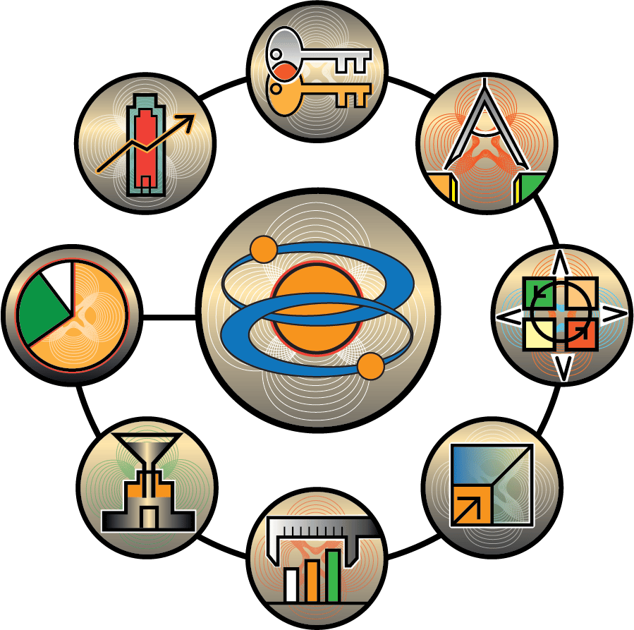

Business units and
HR co-own academy
Assess capability gaps and
estimate value
Design
learning journeys
Execute and
scale effectively
Measure impact on business
Institutionalize and integrate
Enable 70:20:10
Align
with business strategy
Systems and learning technology application
4. Design of learning journeys
Most corporate learning is delivered through a combination of digital-learning formats and in-person sessions. Traditional L&D programs consisted of several days of classroom learning with no follow-up sessions, even though people tend to forget what they have learned without regular reinforcement. As a result, many L&D functions are moving away from stand-alone programs by designing learning journeys—continuous learning opportunities that take place over a period of time and include L&D interventions such as fieldwork, pre- and post-classroom digital learning, social learning, on-the-job coaching and mentoring, and short workshops. The main objectives of a learning journey are to help people develop the required new competencies in the most effective and efficient way, and to support the transfer of learning to the job.
Learn more in the following book chapters:
Chapter 5
Seven essential elements of a lifelong-learning mind-set
Shaping individual development along the S-curve
Maximizing learning impact: The role of authentic confidence
Chapter 6
Chapter 7

Chapter 8
Curation: Moving beyond content management
Changing mind-sets and behaviors: Our role in personal and organizational change
Reinvigorating blended learning
Chapter 10
Chapter 13
Proven strategies to integrate immersive learning into your organization
Chapter 14
Chapter 15
Maximizing the impact of feedback for learning and behavior change
Finding the right faculty: Teaching excellence means classroom success
Chapter 17
1. Alignment with business strategy
One of an L&D executive’s primary tasks is to develop and shape a learning strategy based on the company’s business and talent strategies. A learning strategy seeks to support professional development and build capabilities across the company, on time, and in a cost-effective manner. In addition, the learning strategy can enhance the company culture and encourage employees to live the company’s values.
For many organizations, the L&D function supports the implementation of the business strategy. For example, if one of the business strategies is a digital transformation, L&D will focus on building the necessary people capabilities to make that possible.
Learn more in the following book chapters:
Chapter 1
Enabling agile learning organizations: Structuring options for L&D
L&D governance: The key to earning
a seat at the table
Seven essential elements of a lifelong-learning mind-set
Chapter 2
Chapter 5
2. Co-ownership between business units and HR
With new tools and technologies constantly emerging, companies must become more agile, ready to adapt their business processes and practices. L&D functions must likewise be prepared to rapidly launch capability-building programs—for example, if new business needs suddenly arise or staff members require immediate training on new technologies such as cloud-based collaboration tools.
Learn more in the following book chapters:
Chapter 1
Enabling agile learning organizations: Structuring options for L&D
Optimizing the partnership with IT
Chapter 3
3. Assessment of capability gaps and estimated value
After companies identify their business priorities, they must verify that their employees can deliver them—a task that may be more difficult than it sounds. Some companies make no effort to assess employee capabilities, while others do so only at a high level. Conversations with L&D, HR, and senior executives suggest that many companies are ineffective or indifferent at assessing capability gaps, especially when it comes to senior leaders and midlevel managers. The most effective companies take a deliberate, systematic approach to capability assessment. At the heart of this process is a comprehensive competency or capability model based on the organization’s strategic direction. For example, a key competency for a segment of an e-commerce company’s workforce could be “deep expertise in big data and predictive analytics.”
Learn more in the following book chapter:
Chapter 4
Learning-needs analysis: Cracking the code
5. Execution and scale-up
An established L&D agenda consists of a number of strategic initiatives that support capability building and are aligned with business goals, such as helping leaders develop high-performing teams or roll out safety training. The successful execution of L&D initiatives on time and on budget is critical to build and sustain support from business leaders.
L&D functions often face an overload of initiatives and insufficient funding. L&D leadership needs to maintain an ongoing discussion with business leaders about initiatives and priorities in order to ensure the requisite resources and support.
Learn more in the following book chapters:
Chapter 9
How to improve employee engagement with digital learning
Marketing the idea of lifelong learning
Chapter 11
Changing mind-sets and behaviors: Our role in personal and organizational change
Chapter 10
6. Measurement of impact on business performance
A learning strategy’s execution and impact should be measured using
key performance indicators (KPIs). The first indicator looks at business excellence: how closely aligned all L&D initiatives and investments
are with business priorities. The second KPI looks at learning excellence: whether learning interventions change people’s behavior and performance. Last, an operational-excellence KPI measures how well investments and resources in the corporate academy are used.
Learn more in the following book chapter:
Chapter 12
Harnessing analytics
to shape the learning-and-development agenda
7. Integration of L&D interventions into HR processes
Just as L&D corporate-learning activities need to be aligned with the business, they should also be an integral part of the HR agenda. L&D
has an important role to play in recruitment, onboarding, performance management, promotion, workforce, and succession planning. Our research shows that at best, many L&D functions have only loose connections to annual performance reviews and lack a structured approach and follow-up to performance-management practices.
L&D leadership must understand major HR management practices and processes and collaborate closely with HR leaders.
Learn more in the following book chapters:
Chapter 15
Maximizing the impact of feedback for learning and behavior change
Finding the right faculty: Teaching excellence means classroom success
Chapter 17
9. Systems and learning-technology applications
The most significant enablers for just-in-time learning are technology platforms and applications. Examples include next-generation learning-management systems, virtual classrooms, mobile-learning apps, embedded performance-support systems, polling software, learning-video platforms, learning-assessment and -measurement platforms, massive open online courses (MOOCs), and small private online courses (SPOCs), to name just a few.
Learn more in the following book chapter:
Chapter 19
Migrating learning to the cloud
The ACADEMIES framework
8. Enable the 70:20:10 learning framework
Many L&D functions embrace a framework known as “70:20:10,” in which
70 percent of learning takes place on the job, 20 percent through interaction and collaboration, and 10 percent through formal learning interventions such as classroom training and digital curricula. These percentages are general guidelines and vary by industry and organization. L&D functions have traditionally focused on the formal-learning component.
Today, L&D leaders must design and implement interventions that support informal learning, including coaching and mentoring, on-the-job instruction, apprenticeships, leadership shadowing, action-based learning, on-demand access to digital learning, and lunch-and-learn sessions.
Learn more in the following book chapters:
Chapter 8
Curation: Moving beyond content management
Marketing the idea of lifelong learning
Chapter 11
Nine dimensions contribute to a strong L&D function, which we've combined in the ACADEMIES framework. Although many companies regularly execute on several dimensions of this framework, our recent research found that only a few companies are fully mature in all dimensions.
Reinvigorating blended learning
Chapter 13
Proven strategies to integrate immersive learning into your organization
Chapter 14
Maximizing the impact of feedback for learning and behavior change
Chapter 15
Finding the right faculty: Teaching excellence means classroom success
Chapter 17
Developing an organizational coaching strategy and culture
Chapter 16
The learning facility of the future
Chapter 18

Click on the framework's dimensions for more information.